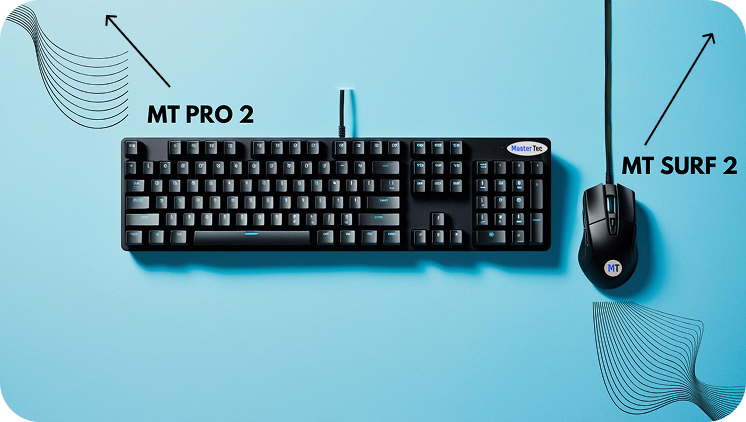

Belo Horizonte - MG, 30431-191
| Produtos | Contato | Sobre | Principal | ||||
| O MT PRO 2 é a combinação perfeita entre desempenho e design. Com switches de alta qualidade e tecnologia avançada, esse teclado oferece uma experiência de digitação rápida e precisa. Sua estrutura robusta é complementada por teclas retroiluminadas personalizáveis, permitindo que você escolha a iluminação que mais combina com seu estilo. Ideal para gamers e profissionais, o MT PRO 2 também conta com uma resposta de 1000Hz, garantindo uma performance impecável em jogos e tarefas intensas. Seja no trabalho ou no lazer, o MT PRO 2 proporciona conforto e eficiência a cada toque. |  | O MT PRO 2 é a combinação perfeita entre desempenho e design. Com switches de alta qualidade e tecnologia avançada, esse teclado oferece uma experiência de digitação rápida e precisa. Sua estrutura robusta é complementada por teclas retroiluminadas personalizáveis, permitindo que você escolha a iluminação que mais combina com seu estilo. Ideal para gamers e profissionais, o MT PRO 2 também conta com uma resposta de 1000Hz, garantindo uma performance impecável em jogos e tarefas intensas. Seja no trabalho ou no lazer, o MT PRO 2 proporciona conforto e eficiência a cada toque. | |||||
|
© 2025 MASTERTEC BRASIL | |
Av. Silva Lobo, 1002 - Loja 08
Grajaú, Belo Horizonte - MG, 30431-191 |
||||